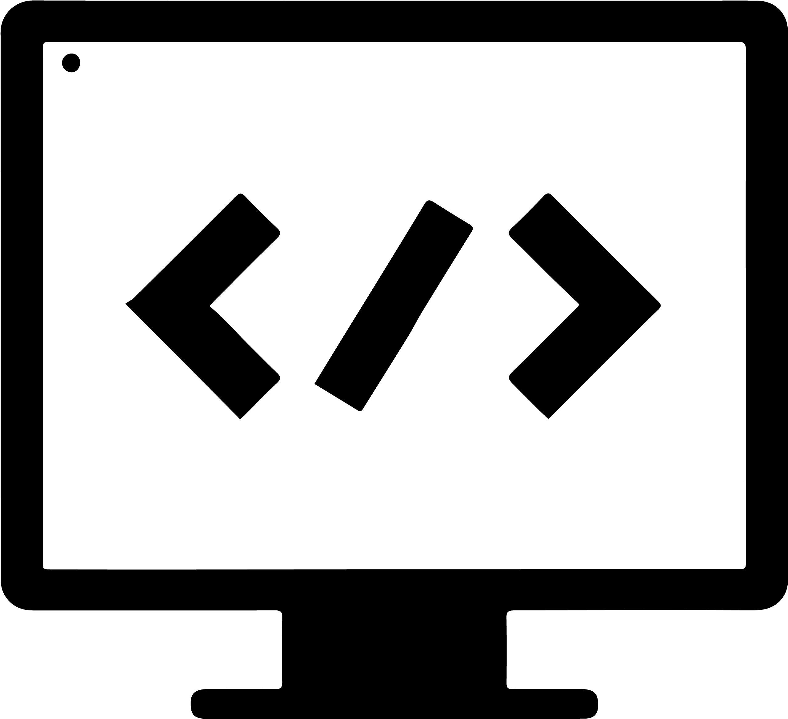

Hey, My name is Yash
and I am a passionate

What i Have performed so far
Work experiences

HTML and CSS Developer
Strength basic concepts of HTML and css and applied for creating basic website.
GWOC'2023
Participated in GWOC'23 finals and created a responsive Website using HTML,CSS and JavaScript.
Web and Wordpress Developer
Learnt and created Wordpress websites and explored its various features
Sahajanand Trust Internship
Completed my 8 week internship with Sahajanand Trust and created a responsive website for the trust.